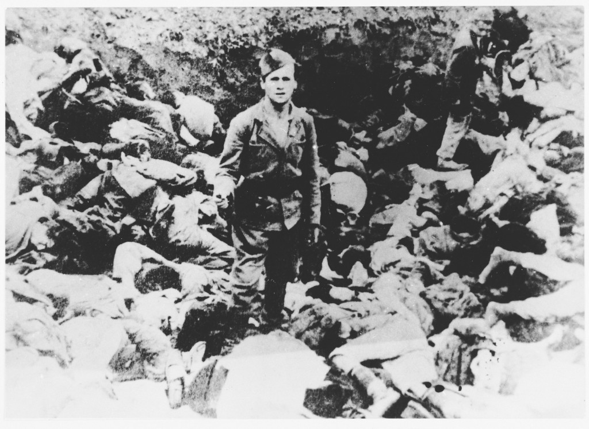

Hiding Behind Telegram, Pay-Per-Like Scammers Hook Unwitting Serbians
Fraudsters are targeting Serbians on Telegram, promising work and investment opportunities but ultimately stealing their money.
I am an investigative journalist, skilled in researching bussinesses, legislations, threats to digital freedoms, enviroment endangering and international humanitarian law. Besides investigative reporting, I am experienced in covering protests, especially those that include violence. In my free time, I am training other journalists on cyber security. During my 14 years in the job, I worked for some of the most prominent investigative outlets in Serbia. Currenty, I am pursuing my master's degree at the Missouri Journalism School.
Fraudsters are targeting Serbians on Telegram, promising work and investment opportunities but ultimately stealing their money.

As tensions grew in Yugoslavia, Serbia used the crimes committed by the fascist Ustasha forces of World War Two to whip up fear and hatred of Croats, preparing the public for war.

BIRN’s analysis of Hague Tribunal evidence reveals which Yugoslav People’s Army and Serb paramilitary units were deployed in villages around Vukovar in Croatia in November 1991 when Croat civilian prisoners were murdered after the town fell.

National Ecological Centre, managed by the Nature Park and tourist settlement Drvengrad, owned by Emir Kusturica, are both located in Mokra Gora. While Drvengrad runs its business successfully hosting thousands of visitors, the Centre welcomes no tourists at all in spite of the fact that six years have passed since its opening. While previously holding the position of the director, Kusturica is now the president of the Nature Park’s Assembly.

Investigations and analysis on judiciary, environment, human rights, minority rights, digital rights, public money spending, transitional justice; all stories are available here; participation in editorial decision and coordination of work with journalists and editors from 10 countries; mentoring; factcheking; cyber security trainings for journalists
Investigative stories on judiciary, public money spending, corruption, environment, human rights, privatizations; cybersecurity, FOIA rules, databases and Excel trainings in CINS’s schools for journalists. Stories in Serbian are available here. and stories in English are available here.
News, features on politics, environment, society, crimes; content editor and shift coordinator.
BIRN Summer School of Investigative Reporting: Trainer of digital security for more than 20 journalists from South-eastern and Eastern Europe; happens annually.
School of digital journalism happens annually, for arounf ten local journalists from Serbia.
“Who defend defenders” (Ko brani branitelje) Project: Training and developing security policies for 3 NGOs in Serbia.